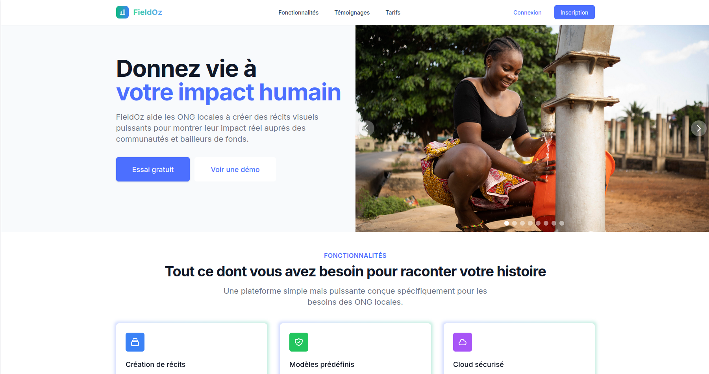

CONCEVOIR DES LOGICIELS QUI COMPTENT.
BÂTIR POUR
DURER.
Depuis plus de 6 ans, je conçois et développe des applications web et mobiles sur-mesure pour les organisations confrontées aux réalités du terrain. Des parcs nationaux d'Afrique de l'Ouest aux cabinets de conseil et commerces de proximité : je crée des outils clairs, solides et utiles dès le premier jour.
Plus de 6 ans de développement au service d'institutions internationales (GIZ), d'ONG de conservation, de la FinTech, des médias et du commerce local.
Qu'il s'agisse d'une application mobile fonctionnant sans réseau, d'un diagnostic financier assisté par IA ou d'une plateforme cartographique, chaque projet est écrit pour durer et rester simple à prendre en main.
L'ÉCOLE DU TERRAIN : POURQUOI JE CODE AUTREMENT.
Là où chaque ligne de code a une conséquence réelle
Ma façon de concevoir un logiciel ne s'est pas construite dans des bureaux coupés du monde avec une connexion fibre illimitée. Elle s'est forgée sur le terrain : face à des réseaux capricieux, des appareils très différents et l'obligation que l'outil fonctionne du premier coup.
Lorsqu'on livre une application pour les écogardes des parcs du complexe WAP, pour des agents de santé en zone rurale ou pour un commerçant qui gère sa caisse avec Akonta, un bug n'est pas un simple ticket technique : c'est une patrouille retardée, un rapport bloqué ou une journée de vente perdue.
« Mon rôle n'est pas d'empiler des technologies à la mode, mais de résoudre un vrai problème métier avec un outil clair que vos équipes aiment utiliser. »
FIELDOZ — TRANSFORMER LES DONNÉES TERRAIN EN PREUVES D'IMPACT

FieldOz — Donner une voix claire aux actions de terrain
Les organisations de terrain passent souvent des semaines à consolider des fichiers dispersés pour prouver l'impact de leurs missions. FieldOz rassemble les données collectées sur le terrain et les transforme automatiquement en bilans visuels compréhensibles par les décideurs et les partenaires financiers.
« Permettre aux équipes opérationnelles de présenter leurs résultats clairement, sans perdre des jours dans des tableurs complexes. »
9 SYSTÈMES CONÇUS POUR DES BESOINS RÉELS.
Parcourez l'ensemble des applications web, mobiles et systèmes métier développés ces dernières années. Cliquez sur une carte ou sur « Voir les captures » pour inspecter chaque écran en détail.
6 ANNÉES D'EXPÉRIENCE ENTRE ARCHITECTURE, WEB ET MOBILE.
De mes premières missions de développement jusqu'à l'architecture de plateformes complètes en FinTech et en conservation environnementale, voici les étapes clés de mon parcours.
LES OUTILS QUE J'UTILISE AU QUOTIDIEN.
Des technologies choisies pour leur fiabilité en production, leur clarté de maintenance et leur adaptation aux contraintes de chaque projet.
PARLONS DE VOTRE PROCHAIN PROJET.
Vous avez besoin de concevoir une nouvelle plateforme, de lancer une application mobile ou de faire évoluer un outil existant ? Écrivez-moi directement par le canal qui vous convient le mieux.
Échange direct avec moi, sans intermédiaire commercial, avec un retour clair sur la faisabilité et les étapes de réalisation.
WhatsApp Direct
Idéal pour un premier échange rapide par message ou note vocale
Email Professionnel
Pour me transmettre vos besoins détaillés, documents ou propositions
Profil LinkedIn
Consultez mon parcours détaillé et échangeons dans votre réseau